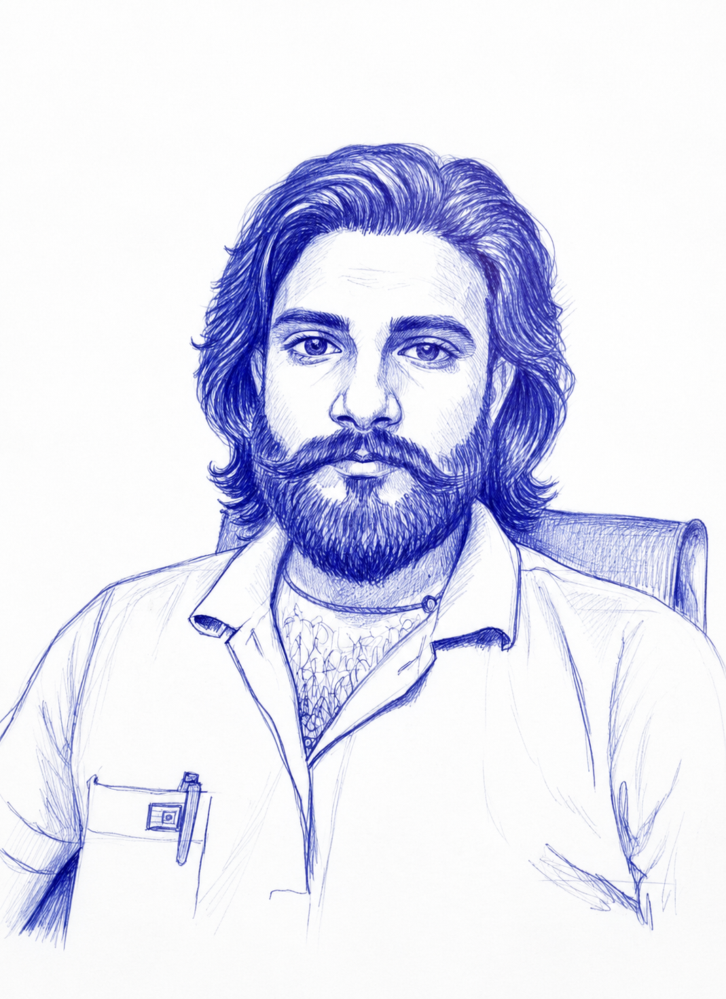
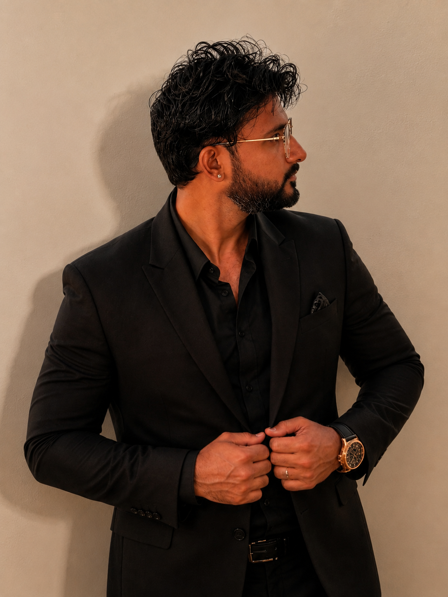

Professional Photos


About Surendar Singh Kotra
Welcome to the official professional website of Surendar Singh Kotra.
I am a Shift Manager working in the Steel Plant CCM Department, with 11 years of professional experience in the steel industry.
My professional experience includes steel plant operations, Continuous Casting Machine (CCM) operations, shift management, production coordination, team management and operational safety.
Professional Profile
Surendar Singh Kotra
Shift Manager
CCM Department
Steel Plant
11 Years
Steel & Continuous Casting
Professional Experience
Shift Manager – CCM Department
11 Years of Professional Experience in the steel plant industry.
Experienced in Continuous Casting Machine operations, shift management, production coordination, team supervision, operational safety and steel plant process management.
Areas of Professional Experience
- Continuous Casting Machine (CCM) Operations
- Steel Plant Shift Operations
- Production Coordination
- Shift Management
- Team Supervision
- Operational Safety
- Process Coordination
Professional Skills
Career Profile
Surendar Singh Kotra is a steel industry professional with 11 years of experience and professional knowledge related to Steel Plant operations and Continuous Casting Machine (CCM) operations.
This website provides a professional overview of my experience, skills and career profile.
Contact
For professional communication and career-related opportunities, please use the contact details below.
Surendar Singh Kotra
Shift Manager – Steel Plant CCM Department